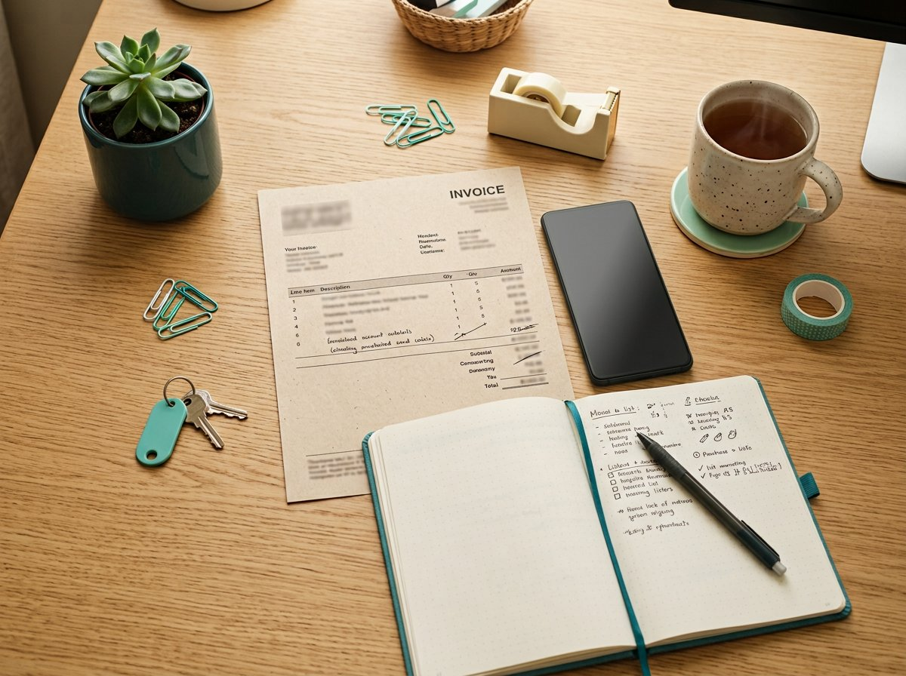

Sessão efêmera · zero armazenamento
Suas notas, seus documentos.
Nada fica no servidor.
Recorte automático da folha, realce de scanner, OCR e PDF — no navegador, no estilo de um caderno calmo.
Digitalizar agoraPromessa: o arquivo não sobe para um servidor nosso. Resposta a issues em até 2 dias úteis, sem plantão 24h.
1. Enquadre
A câmera ou a foto vira um documento. Detectamos as quatro pontas da folha e corrigimos a perspectiva.
2. Realce
Filtros de scanner: branco de papel, tinta nítida, preto e branco ou original.
3. Leia
OCR opcional extrai o texto na hora. Você copia e o original some ao fechar a aba.
Mesa de trabalho
Arquivos só existem nesta sessão. Recarregar a página apaga tudo.
Casos de uso
Exemplos de situação — não são depoimentos de clientes.

Cinco perguntas
Os arquivos vão para a nuvem?
Não para um servidor nosso. Tudo roda no navegador.
Quais formatos?
JPEG, PNG, WebP e PDF, até 25 MB cada.
O OCR erra?
Pode errar. Revise o texto extraído.
E se o recorte falhar?
Use só realce ou original.
Como falar com o projeto?
GitHub Issues, até 2 dias úteis no melhor esforço. FAQ completa
Sem conta. Sem rastro nosso.
Fechar a aba zera a memória. Leia a política de privacidade e os termos.